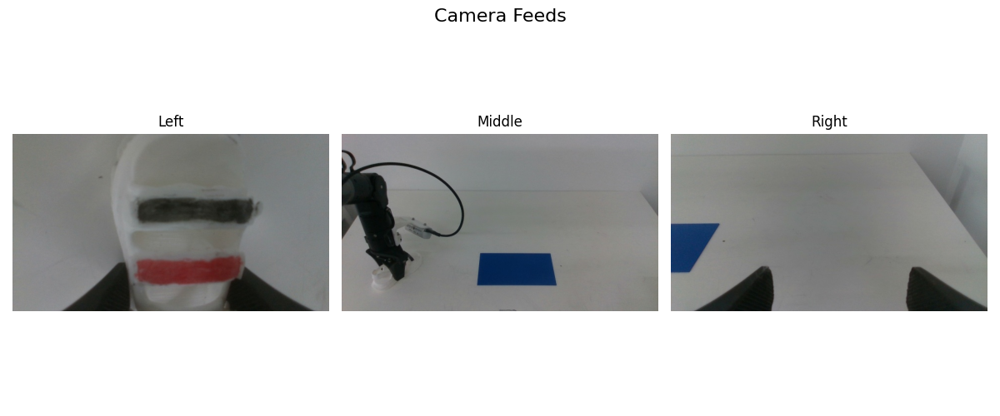

Note
Go to the end to download the full example code.
Accessing and Visualizing Datasets¶
This tutorial covers the two primary ways to access data using RoboOrchard Dataset
1. Row-level Access (RODataset): Accessing single, complete timesteps,
where metadata (from DuckDB) is automatically joined with frame data
(from Arrow).
2. Multi-Row Access (ROMultiRowDataset): Accessing a context of
data around a specific timestep, crucial for training policies that
require observation or action history.
We will also demonstrate how to visualize image modalities.
Before moving to this tutorial, it’s helpful to understand the
specific core data types (like BatchJointsStateFeature or
BatchCameraDataEncodedFeature)
that we use. These are defined in our core data types tutorial.
# sphinx_gallery_thumbnail_path = '_static/images/sphx_glr_install_thumb.png'
Prerequisite: Download the Sample Dataset¶
Before running this tutorial, you must download the sample dataset (dataset 1 (about 9GB) and dataset 2 (about 14BG)) from Hugging Face.
We recommend using the huggingface-cli tool, which is part of the huggingface_hub library.
Below is the example to download dataset 1.
dataset_name=arrow_dataset_place_shoe_2025_08_27
target_path=data1
# 1. Install the Hugging Face client
pip install huggingface_hub
# 2. Download the specific dataset sub-folder from the repo
# This downloads into a temporary directory 'hf_temp_download'
huggingface-cli download \
HorizonRobotics/Real-World-Dataset \
--repo-type dataset \
--include "${dataset_name}/*" \
--local-dir hf_temp_download \
--local-dir-use-symlinks False
# 3. Create the target directory and move the dataset files into it
# Our tutorial code expects the files to be directly in '${target_path}/'.
mkdir ${target_path}
mv hf_temp_download/${dataset_name}/* ${target_path}/
# 4. Clean up the temporary folder
rm -rf hf_temp_download
After running these commands, your data/ directory should have the
following structure (you can verify with tree -L 1 ${target_path}):
data1/
|---- data-00000-of-00004.arrow
|---- data-00001-of-00004.arrow
|---- data-00002-of-00004.arrow
|---- data-00003-of-00004.arrow
|---- dataset_info.json
|---- meta_db.duckdb
|---- state.json
Setup and Imports¶
We’ll need pprint for nicely formatting metadata and matplotlib for visualization. We also import Image and io to handle image decoding, as BatchCameraDataEncoded typically stores compressed bytes.
import io
import pprint
import matplotlib.pyplot as plt
import numpy as np
import torch
from PIL import Image
from robo_orchard_core.datatypes.camera_data import (
BatchCameraData,
BatchCameraDataEncoded,
BatchImageData,
ImageMode,
)
from robo_orchard_lab.dataset.robot import (
ConcatRODataset,
DeltaTimestampSamplerConfig,
RODataset,
ROMultiRowDataset,
)
dataset1_path = "data1"
dataset2_path = "data2"
/home/users/hongyu.xie/workspace/venv/robot-venv/lib/python3.10/site-packages/datasets/utils/experimental.py:37: UserWarning: 'register_feature' is experimental and might be subject to breaking changes in the future.
warnings.warn(
1. Row-level Access with RODataset¶
This is the main entry point for most users. RODataset
provides a standard PyTorch-style Dataset interface.
We set meta_index2meta=True, which is a key feature. This tells the
dataset to automatically resolve the integer indices (like task_index)
in the Arrow file into the full, rich metadata objects (like the task
description) from the DuckDB database.
dataset = RODataset(dataset1_path, meta_index2meta=True)
print(f"Dataset has {len(dataset)} total timesteps (frames).")
print("Dataset features (schema defined in dataset_info.json):")
pprint.pprint(dataset.frame_dataset.features)
Dataset has 31025 total timesteps (frames).
Dataset features (schema defined in dataset_info.json):
{'actions': BatchJointsStateFeature(dtype='float64',
decode=True,
_decode_type=<class 'robo_orchard_core.datatypes.joint_state.BatchJointsState'>),
'episode_index': Value('int64'),
'frame_index': Value('int64'),
'index': Value('int64'),
'instruction_index': Value('int64'),
'joints': BatchJointsStateFeature(dtype='float64',
decode=True,
_decode_type=<class 'robo_orchard_core.datatypes.joint_state.BatchJointsState'>),
'left': BatchCameraDataEncodedFeature(dtype='float64',
decode=True,
_decode_type=<class 'robo_orchard_core.datatypes.camera_data.BatchCameraDataEncoded'>),
'left_depth': BatchCameraDataEncodedFeature(dtype='float64',
decode=True,
_decode_type=<class 'robo_orchard_core.datatypes.camera_data.BatchCameraDataEncoded'>),
'middle': BatchCameraDataEncodedFeature(dtype='float64',
decode=True,
_decode_type=<class 'robo_orchard_core.datatypes.camera_data.BatchCameraDataEncoded'>),
'middle_depth': BatchCameraDataEncodedFeature(dtype='float64',
decode=True,
_decode_type=<class 'robo_orchard_core.datatypes.camera_data.BatchCameraDataEncoded'>),
'right': BatchCameraDataEncodedFeature(dtype='float64',
decode=True,
_decode_type=<class 'robo_orchard_core.datatypes.camera_data.BatchCameraDataEncoded'>),
'right_depth': BatchCameraDataEncodedFeature(dtype='float64',
decode=True,
_decode_type=<class 'robo_orchard_core.datatypes.camera_data.BatchCameraDataEncoded'>),
'robot_index': Value('int64'),
'task_index': Value('int64'),
'timestamp_max': Value('int64'),
'timestamp_min': Value('int64')}
Accessing a Single Sample¶
When you index the RODataset,
you get a single dictionary representing one complete timestep.
Type of a single sample: <class 'dict'>
Keys in the sample: dict_keys(['joints', 'actions', 'middle', 'middle_depth', 'left', 'left_depth', 'right', 'right_depth', 'index', 'frame_index', 'timestamp_min', 'timestamp_max', 'episode', 'task', 'robot', 'instruction'])
Because we set meta_index2meta=True, the metadata keys (instruction,
task, episode) contain the actual data from DuckDB, not just indices.
--- Example of Resolved Metadata ---
Instruction: Instruction({'index': 0, 'name': 'place_shoe', 'json_content': {'description': 'Use one arm to grab the shoe from the table and place it on the mat.', 'name': 'place_shoe'}, 'md5': b'Sra\\y%:\x11\xd4\x06\xb4\x11|5"z'})
Task Info: Task({'index': 0, 'name': 'place_shoe', 'description': 'Use one arm to grab the shoe from the table and place it on the mat.', 'md5': b'\xbe\xe9\rXv\x1d\xf8\xbd\xdc\x9c\xf6\xbcC\x10c\x13'})
Episode Info: Episode({'index': 0, 'dataset_begin_index': 0, 'frame_num': 345, 'robot_index': 0, 'task_index': 0, 'prev_episode_index': None})
The sample also contains the corresponding frame data for that timestep.
--- Example of Frame Data ---
Joints data type: <class 'robo_orchard_core.datatypes.joint_state.BatchJointsState'>
Joints: position=tensor([[ 0.0244, 2.0037, -1.3554, -0.0434, 1.2073, 0.7092, 0.0613, -0.0091,
-0.0098, 0.0289, 0.0220, 0.3481, -0.0163, 0.0694]],
dtype=torch.float64) velocity=None effort=None names=['fl_joint1', 'fl_joint2', 'fl_joint3', 'fl_joint4', 'fl_joint5', 'fl_joint6', 'fl_joint7', 'fr_joint1', 'fr_joint2', 'fr_joint3', 'fr_joint4', 'fr_joint5', 'fr_joint6', 'fr_joint7'] timestamps=[1760443593029551982]
Visualizing Image Modalities¶
The data for left (the left wrist camera) is loaded according to the
BatchCameraDataEncodedFeature type.
This feature typically decodes the raw (e.g., JPEG) bytes from the Arrow file into a PIL.Image object
or a raw bytes buffer.
Let’s visualize it.
def simple_decoder(image_bytes: bytes, format: str) -> BatchImageData:
pil_img = Image.open(io.BytesIO(image_bytes))
# Convert to tensor and add batch dimension
img_tensor = torch.from_numpy(np.array(pil_img)).unsqueeze(0)
return BatchImageData(sensor_data=img_tensor, pix_fmt=ImageMode.RGB)
fig, axes = plt.subplots(1, 3, figsize=(12, 5))
fig.suptitle("Camera Feeds", fontsize=16)
for ax, col_name in zip(axes, ["left", "middle", "right"], strict=True): # type: ignore
camera_data: BatchCameraDataEncoded = sample[col_name]
decode_camera_data: BatchCameraData = camera_data.decode(
decoder=simple_decoder
)
img_to_plot = decode_camera_data.sensor_data[0].numpy()
# Plot the image on the correct axis
ax.imshow(img_to_plot)
ax.set_title(col_name.capitalize())
ax.axis("off") # Hide axis ticks and labels
plt.tight_layout()
plt.show()

Accessing Entire Columns¶
You can also access an entire column efficiently. This leverages the columnar nature of Apache Arrow.
all_joints = dataset["joints"]
print("--- Columnar Access Example ---")
print(f"Type of samples: {type(all_joints)}")
print(f"Total joint entries: {len(all_joints)}")
print(f"Type of first joint entry: {type(all_joints[0])}")
--- Columnar Access Example ---
Type of samples: <class 'datasets.arrow_dataset.Column'>
Total joint entries: 31025
Type of first joint entry: <class 'robo_orchard_core.datatypes.joint_state.BatchJointsState'>
Part 2: Multi-Row (Context) Access¶
For tasks like Imitation Learning, a model needs to see not just the
current state, but also a history of observations and a future
of actions. ROMultiRowDataset
handles this.
We must provide a row_sampler configuration. Here, we use
DeltaTimestampSamplerConfig
to sample data based on time.
This configuration asks for 32 joints samples. The timestamps are relative to the anchor timestep (t=0).
range(32) -> i = 0 to 31
i=0: t + (0-1)/25 = t - 0.04s (1 step before anchor)
i=1: t + (1-1)/25 = t + 0.0s (the anchor step)
i=31: t + (31-1)/25 = t + 1.2s (30 steps after anchor)
This setup is common for behavior cloning (e.g., 1 observation, 31 actions).
timestamps = [0.0 + 1.0 / 25 * i for i in range(32)]
delta_timestamps_config = DeltaTimestampSamplerConfig(
column_delta_ts={"joints": timestamps},
tolerance=0.01, # Allow 10ms tolerance in timestamp matching
)
multi_row_dataset = ROMultiRowDataset(
dataset1_path, row_sampler=delta_timestamps_config, meta_index2meta=True
)
Accessing a Multi-Row Sample¶
Now, indexing the dataset returns a sample where “joints” is a list of 32 states, sampled according to our config.
delta_ts_row = multi_row_dataset[100] # Get context around the 100th frame
print("--- Multi-Row Sample ---")
print(f"Type of multi-row sample: {type(delta_ts_row)}")
print(f"Keys in the sample: {delta_ts_row.keys()}")
--- Multi-Row Sample ---
Type of multi-row sample: <class 'dict'>
Keys in the sample: dict_keys(['joints', 'actions', 'middle', 'middle_depth', 'left', 'left_depth', 'right', 'right_depth', 'index', 'frame_index', 'timestamp_min', 'timestamp_max', 'episode', 'task', 'robot', 'instruction'])
The “joints” key now contains a list of 32 elements, as requested.
print(f"Number of 'joints' samples retrieved: {len(delta_ts_row['joints'])}")
print(delta_ts_row["joints"]) # Uncomment to see the full data
Number of 'joints' samples retrieved: 32
[BatchJointsState(position=tensor([[ 0.0244, 2.0037, -1.3554, -0.0434, 1.2073, 0.7092, 0.0613, -0.0091,
-0.0098, 0.0289, 0.0220, 0.3481, -0.0163, 0.0694]],
dtype=torch.float64), velocity=None, effort=None, names=['fl_joint1', 'fl_joint2', 'fl_joint3', 'fl_joint4', 'fl_joint5', 'fl_joint6', 'fl_joint7', 'fr_joint1', 'fr_joint2', 'fr_joint3', 'fr_joint4', 'fr_joint5', 'fr_joint6', 'fr_joint7'], timestamps=[1760443593029551982]), BatchJointsState(position=tensor([[ 0.0244, 2.0046, -1.3554, -0.0463, 1.2073, 0.7092, 0.0600, -0.0091,
-0.0098, 0.0289, 0.0220, 0.3481, -0.0163, 0.0694]],
dtype=torch.float64), velocity=None, effort=None, names=['fl_joint1', 'fl_joint2', 'fl_joint3', 'fl_joint4', 'fl_joint5', 'fl_joint6', 'fl_joint7', 'fr_joint1', 'fr_joint2', 'fr_joint3', 'fr_joint4', 'fr_joint5', 'fr_joint6', 'fr_joint7'], timestamps=[1760443593069551982]), BatchJointsState(position=tensor([[ 0.0244, 2.0046, -1.3554, -0.0473, 1.2073, 0.7092, 0.0591, -0.0091,
-0.0098, 0.0289, 0.0220, 0.3481, -0.0163, 0.0694]],
dtype=torch.float64), velocity=None, effort=None, names=['fl_joint1', 'fl_joint2', 'fl_joint3', 'fl_joint4', 'fl_joint5', 'fl_joint6', 'fl_joint7', 'fr_joint1', 'fr_joint2', 'fr_joint3', 'fr_joint4', 'fr_joint5', 'fr_joint6', 'fr_joint7'], timestamps=[1760443593109551982]), BatchJointsState(position=tensor([[ 0.0244, 2.0048, -1.3568, -0.0482, 1.2073, 0.7092, 0.0580, -0.0091,
-0.0098, 0.0289, 0.0220, 0.3481, -0.0163, 0.0694]],
dtype=torch.float64), velocity=None, effort=None, names=['fl_joint1', 'fl_joint2', 'fl_joint3', 'fl_joint4', 'fl_joint5', 'fl_joint6', 'fl_joint7', 'fr_joint1', 'fr_joint2', 'fr_joint3', 'fr_joint4', 'fr_joint5', 'fr_joint6', 'fr_joint7'], timestamps=[1760443593149551982]), BatchJointsState(position=tensor([[ 0.0244, 2.0056, -1.3567, -0.0493, 1.2084, 0.7092, 0.0578, -0.0091,
-0.0098, 0.0289, 0.0220, 0.3481, -0.0163, 0.0694]],
dtype=torch.float64), velocity=None, effort=None, names=['fl_joint1', 'fl_joint2', 'fl_joint3', 'fl_joint4', 'fl_joint5', 'fl_joint6', 'fl_joint7', 'fr_joint1', 'fr_joint2', 'fr_joint3', 'fr_joint4', 'fr_joint5', 'fr_joint6', 'fr_joint7'], timestamps=[1760443593189551982]), BatchJointsState(position=tensor([[ 0.0244, 2.0045, -1.3570, -0.0493, 1.2093, 0.7092, 0.0579, -0.0091,
-0.0098, 0.0289, 0.0220, 0.3481, -0.0163, 0.0694]],
dtype=torch.float64), velocity=None, effort=None, names=['fl_joint1', 'fl_joint2', 'fl_joint3', 'fl_joint4', 'fl_joint5', 'fl_joint6', 'fl_joint7', 'fr_joint1', 'fr_joint2', 'fr_joint3', 'fr_joint4', 'fr_joint5', 'fr_joint6', 'fr_joint7'], timestamps=[1760443593229551982]), BatchJointsState(position=tensor([[ 0.0244, 2.0031, -1.3570, -0.0503, 1.2093, 0.7092, 0.0579, -0.0091,
-0.0098, 0.0289, 0.0220, 0.3481, -0.0163, 0.0694]],
dtype=torch.float64), velocity=None, effort=None, names=['fl_joint1', 'fl_joint2', 'fl_joint3', 'fl_joint4', 'fl_joint5', 'fl_joint6', 'fl_joint7', 'fr_joint1', 'fr_joint2', 'fr_joint3', 'fr_joint4', 'fr_joint5', 'fr_joint6', 'fr_joint7'], timestamps=[1760443593269551982]), BatchJointsState(position=tensor([[ 0.0244, 2.0007, -1.3570, -0.0547, 1.2072, 0.7092, 0.0579, -0.0091,
-0.0098, 0.0289, 0.0220, 0.3481, -0.0163, 0.0694]],
dtype=torch.float64), velocity=None, effort=None, names=['fl_joint1', 'fl_joint2', 'fl_joint3', 'fl_joint4', 'fl_joint5', 'fl_joint6', 'fl_joint7', 'fr_joint1', 'fr_joint2', 'fr_joint3', 'fr_joint4', 'fr_joint5', 'fr_joint6', 'fr_joint7'], timestamps=[1760443593309551982]), BatchJointsState(position=tensor([[ 0.0205, 1.9953, -1.3570, -0.0572, 1.2062, 0.7070, 0.0579, -0.0091,
-0.0098, 0.0289, 0.0220, 0.3481, -0.0163, 0.0694]],
dtype=torch.float64), velocity=None, effort=None, names=['fl_joint1', 'fl_joint2', 'fl_joint3', 'fl_joint4', 'fl_joint5', 'fl_joint6', 'fl_joint7', 'fr_joint1', 'fr_joint2', 'fr_joint3', 'fr_joint4', 'fr_joint5', 'fr_joint6', 'fr_joint7'], timestamps=[1760443593349551982]), BatchJointsState(position=tensor([[ 0.0161, 1.9870, -1.3570, -0.0572, 1.2038, 0.7046, 0.0579, -0.0091,
-0.0098, 0.0289, 0.0220, 0.3481, -0.0163, 0.0694]],
dtype=torch.float64), velocity=None, effort=None, names=['fl_joint1', 'fl_joint2', 'fl_joint3', 'fl_joint4', 'fl_joint5', 'fl_joint6', 'fl_joint7', 'fr_joint1', 'fr_joint2', 'fr_joint3', 'fr_joint4', 'fr_joint5', 'fr_joint6', 'fr_joint7'], timestamps=[1760443593389551982]), BatchJointsState(position=tensor([[ 0.0065, 1.9753, -1.3570, -0.0545, 1.2028, 0.7005, 0.0579, -0.0091,
-0.0098, 0.0289, 0.0220, 0.3481, -0.0163, 0.0694]],
dtype=torch.float64), velocity=None, effort=None, names=['fl_joint1', 'fl_joint2', 'fl_joint3', 'fl_joint4', 'fl_joint5', 'fl_joint6', 'fl_joint7', 'fr_joint1', 'fr_joint2', 'fr_joint3', 'fr_joint4', 'fr_joint5', 'fr_joint6', 'fr_joint7'], timestamps=[1760443593429551982]), BatchJointsState(position=tensor([[-0.0042, 1.9592, -1.3570, -0.0533, 1.2029, 0.6952, 0.0579, -0.0091,
-0.0098, 0.0289, 0.0220, 0.3481, -0.0163, 0.0694]],
dtype=torch.float64), velocity=None, effort=None, names=['fl_joint1', 'fl_joint2', 'fl_joint3', 'fl_joint4', 'fl_joint5', 'fl_joint6', 'fl_joint7', 'fr_joint1', 'fr_joint2', 'fr_joint3', 'fr_joint4', 'fr_joint5', 'fr_joint6', 'fr_joint7'], timestamps=[1760443593469551982]), BatchJointsState(position=tensor([[-0.0140, 1.9411, -1.3570, -0.0524, 1.2029, 0.6879, 0.0579, -0.0091,
-0.0098, 0.0289, 0.0220, 0.3481, -0.0163, 0.0694]],
dtype=torch.float64), velocity=None, effort=None, names=['fl_joint1', 'fl_joint2', 'fl_joint3', 'fl_joint4', 'fl_joint5', 'fl_joint6', 'fl_joint7', 'fr_joint1', 'fr_joint2', 'fr_joint3', 'fr_joint4', 'fr_joint5', 'fr_joint6', 'fr_joint7'], timestamps=[1760443593509551982]), BatchJointsState(position=tensor([[-0.0275, 1.9230, -1.3570, -0.0508, 1.2029, 0.6785, 0.0579, -0.0091,
-0.0098, 0.0289, 0.0220, 0.3481, -0.0163, 0.0694]],
dtype=torch.float64), velocity=None, effort=None, names=['fl_joint1', 'fl_joint2', 'fl_joint3', 'fl_joint4', 'fl_joint5', 'fl_joint6', 'fl_joint7', 'fr_joint1', 'fr_joint2', 'fr_joint3', 'fr_joint4', 'fr_joint5', 'fr_joint6', 'fr_joint7'], timestamps=[1760443593549551982]), BatchJointsState(position=tensor([[-0.0418, 1.9059, -1.3570, -0.0500, 1.2029, 0.6720, 0.0579, -0.0091,
-0.0098, 0.0289, 0.0220, 0.3481, -0.0163, 0.0694]],
dtype=torch.float64), velocity=None, effort=None, names=['fl_joint1', 'fl_joint2', 'fl_joint3', 'fl_joint4', 'fl_joint5', 'fl_joint6', 'fl_joint7', 'fr_joint1', 'fr_joint2', 'fr_joint3', 'fr_joint4', 'fr_joint5', 'fr_joint6', 'fr_joint7'], timestamps=[1760443593589551982]), BatchJointsState(position=tensor([[-0.0573, 1.8936, -1.3570, -0.0500, 1.2044, 0.6682, 0.0579, -0.0091,
-0.0098, 0.0289, 0.0220, 0.3481, -0.0163, 0.0694]],
dtype=torch.float64), velocity=None, effort=None, names=['fl_joint1', 'fl_joint2', 'fl_joint3', 'fl_joint4', 'fl_joint5', 'fl_joint6', 'fl_joint7', 'fr_joint1', 'fr_joint2', 'fr_joint3', 'fr_joint4', 'fr_joint5', 'fr_joint6', 'fr_joint7'], timestamps=[1760443593629551982]), BatchJointsState(position=tensor([[-0.0730, 1.8797, -1.3570, -0.0500, 1.2041, 0.6624, 0.0579, -0.0091,
-0.0098, 0.0289, 0.0220, 0.3481, -0.0163, 0.0694]],
dtype=torch.float64), velocity=None, effort=None, names=['fl_joint1', 'fl_joint2', 'fl_joint3', 'fl_joint4', 'fl_joint5', 'fl_joint6', 'fl_joint7', 'fr_joint1', 'fr_joint2', 'fr_joint3', 'fr_joint4', 'fr_joint5', 'fr_joint6', 'fr_joint7'], timestamps=[1760443593669551982]), BatchJointsState(position=tensor([[-0.0903, 1.8685, -1.3570, -0.0500, 1.2069, 0.6545, 0.0579, -0.0091,
-0.0098, 0.0289, 0.0220, 0.3481, -0.0163, 0.0694]],
dtype=torch.float64), velocity=None, effort=None, names=['fl_joint1', 'fl_joint2', 'fl_joint3', 'fl_joint4', 'fl_joint5', 'fl_joint6', 'fl_joint7', 'fr_joint1', 'fr_joint2', 'fr_joint3', 'fr_joint4', 'fr_joint5', 'fr_joint6', 'fr_joint7'], timestamps=[1760443593709551982]), BatchJointsState(position=tensor([[-0.1050, 1.8615, -1.3570, -0.0500, 1.2078, 0.6484, 0.0579, -0.0091,
-0.0098, 0.0289, 0.0220, 0.3481, -0.0163, 0.0694]],
dtype=torch.float64), velocity=None, effort=None, names=['fl_joint1', 'fl_joint2', 'fl_joint3', 'fl_joint4', 'fl_joint5', 'fl_joint6', 'fl_joint7', 'fr_joint1', 'fr_joint2', 'fr_joint3', 'fr_joint4', 'fr_joint5', 'fr_joint6', 'fr_joint7'], timestamps=[1760443593749551982]), BatchJointsState(position=tensor([[-0.1243, 1.8567, -1.3626, -0.0500, 1.2109, 0.6408, 0.0579, -0.0091,
-0.0098, 0.0289, 0.0220, 0.3481, -0.0163, 0.0694]],
dtype=torch.float64), velocity=None, effort=None, names=['fl_joint1', 'fl_joint2', 'fl_joint3', 'fl_joint4', 'fl_joint5', 'fl_joint6', 'fl_joint7', 'fr_joint1', 'fr_joint2', 'fr_joint3', 'fr_joint4', 'fr_joint5', 'fr_joint6', 'fr_joint7'], timestamps=[1760443593789551982]), BatchJointsState(position=tensor([[-0.1457, 1.8542, -1.3685, -0.0500, 1.2141, 0.6306, 0.0579, -0.0091,
-0.0098, 0.0289, 0.0220, 0.3481, -0.0163, 0.0694]],
dtype=torch.float64), velocity=None, effort=None, names=['fl_joint1', 'fl_joint2', 'fl_joint3', 'fl_joint4', 'fl_joint5', 'fl_joint6', 'fl_joint7', 'fr_joint1', 'fr_joint2', 'fr_joint3', 'fr_joint4', 'fr_joint5', 'fr_joint6', 'fr_joint7'], timestamps=[1760443593829551982]), BatchJointsState(position=tensor([[-0.1638, 1.8541, -1.3758, -0.0500, 1.2141, 0.6229, 0.0579, -0.0091,
-0.0098, 0.0289, 0.0220, 0.3481, -0.0163, 0.0694]],
dtype=torch.float64), velocity=None, effort=None, names=['fl_joint1', 'fl_joint2', 'fl_joint3', 'fl_joint4', 'fl_joint5', 'fl_joint6', 'fl_joint7', 'fr_joint1', 'fr_joint2', 'fr_joint3', 'fr_joint4', 'fr_joint5', 'fr_joint6', 'fr_joint7'], timestamps=[1760443593869551982]), BatchJointsState(position=tensor([[-0.1875, 1.8541, -1.3865, -0.0500, 1.2141, 0.6159, 0.0579, -0.0091,
-0.0098, 0.0289, 0.0220, 0.3481, -0.0163, 0.0694]],
dtype=torch.float64), velocity=None, effort=None, names=['fl_joint1', 'fl_joint2', 'fl_joint3', 'fl_joint4', 'fl_joint5', 'fl_joint6', 'fl_joint7', 'fr_joint1', 'fr_joint2', 'fr_joint3', 'fr_joint4', 'fr_joint5', 'fr_joint6', 'fr_joint7'], timestamps=[1760443593909551982]), BatchJointsState(position=tensor([[-0.2119, 1.8541, -1.4021, -0.0500, 1.2131, 0.6084, 0.0579, -0.0091,
-0.0098, 0.0289, 0.0220, 0.3481, -0.0163, 0.0694]],
dtype=torch.float64), velocity=None, effort=None, names=['fl_joint1', 'fl_joint2', 'fl_joint3', 'fl_joint4', 'fl_joint5', 'fl_joint6', 'fl_joint7', 'fr_joint1', 'fr_joint2', 'fr_joint3', 'fr_joint4', 'fr_joint5', 'fr_joint6', 'fr_joint7'], timestamps=[1760443593949551982]), BatchJointsState(position=tensor([[-0.2317, 1.8541, -1.4136, -0.0500, 1.2140, 0.6008, 0.0579, -0.0091,
-0.0098, 0.0289, 0.0220, 0.3481, -0.0163, 0.0694]],
dtype=torch.float64), velocity=None, effort=None, names=['fl_joint1', 'fl_joint2', 'fl_joint3', 'fl_joint4', 'fl_joint5', 'fl_joint6', 'fl_joint7', 'fr_joint1', 'fr_joint2', 'fr_joint3', 'fr_joint4', 'fr_joint5', 'fr_joint6', 'fr_joint7'], timestamps=[1760443593989551982]), BatchJointsState(position=tensor([[-0.2566, 1.8553, -1.4289, -0.0500, 1.2141, 0.5942, 0.0579, -0.0091,
-0.0098, 0.0289, 0.0220, 0.3481, -0.0163, 0.0694]],
dtype=torch.float64), velocity=None, effort=None, names=['fl_joint1', 'fl_joint2', 'fl_joint3', 'fl_joint4', 'fl_joint5', 'fl_joint6', 'fl_joint7', 'fr_joint1', 'fr_joint2', 'fr_joint3', 'fr_joint4', 'fr_joint5', 'fr_joint6', 'fr_joint7'], timestamps=[1760443594029551982]), BatchJointsState(position=tensor([[-0.2867, 1.8587, -1.4466, -0.0500, 1.2141, 0.5882, 0.0579, -0.0091,
-0.0098, 0.0289, 0.0220, 0.3481, -0.0163, 0.0694]],
dtype=torch.float64), velocity=None, effort=None, names=['fl_joint1', 'fl_joint2', 'fl_joint3', 'fl_joint4', 'fl_joint5', 'fl_joint6', 'fl_joint7', 'fr_joint1', 'fr_joint2', 'fr_joint3', 'fr_joint4', 'fr_joint5', 'fr_joint6', 'fr_joint7'], timestamps=[1760443594069551982]), BatchJointsState(position=tensor([[-0.3065, 1.8628, -1.4660, -0.0500, 1.2150, 0.5808, 0.0579, -0.0091,
-0.0098, 0.0289, 0.0220, 0.3481, -0.0163, 0.0694]],
dtype=torch.float64), velocity=None, effort=None, names=['fl_joint1', 'fl_joint2', 'fl_joint3', 'fl_joint4', 'fl_joint5', 'fl_joint6', 'fl_joint7', 'fr_joint1', 'fr_joint2', 'fr_joint3', 'fr_joint4', 'fr_joint5', 'fr_joint6', 'fr_joint7'], timestamps=[1760443594109551982]), BatchJointsState(position=tensor([[-0.3311, 1.8699, -1.4859, -0.0500, 1.2160, 0.5733, 0.0579, -0.0091,
-0.0098, 0.0289, 0.0220, 0.3481, -0.0163, 0.0694]],
dtype=torch.float64), velocity=None, effort=None, names=['fl_joint1', 'fl_joint2', 'fl_joint3', 'fl_joint4', 'fl_joint5', 'fl_joint6', 'fl_joint7', 'fr_joint1', 'fr_joint2', 'fr_joint3', 'fr_joint4', 'fr_joint5', 'fr_joint6', 'fr_joint7'], timestamps=[1760443594149551982]), BatchJointsState(position=tensor([[-0.3555, 1.8795, -1.5023, -0.0500, 1.2160, 0.5656, 0.0579, -0.0091,
-0.0098, 0.0289, 0.0220, 0.3481, -0.0163, 0.0694]],
dtype=torch.float64), velocity=None, effort=None, names=['fl_joint1', 'fl_joint2', 'fl_joint3', 'fl_joint4', 'fl_joint5', 'fl_joint6', 'fl_joint7', 'fr_joint1', 'fr_joint2', 'fr_joint3', 'fr_joint4', 'fr_joint5', 'fr_joint6', 'fr_joint7'], timestamps=[1760443594189551982]), BatchJointsState(position=tensor([[-0.3747, 1.8896, -1.5183, -0.0500, 1.2160, 0.5600, 0.0579, -0.0091,
-0.0098, 0.0289, 0.0220, 0.3481, -0.0163, 0.0694]],
dtype=torch.float64), velocity=None, effort=None, names=['fl_joint1', 'fl_joint2', 'fl_joint3', 'fl_joint4', 'fl_joint5', 'fl_joint6', 'fl_joint7', 'fr_joint1', 'fr_joint2', 'fr_joint3', 'fr_joint4', 'fr_joint5', 'fr_joint6', 'fr_joint7'], timestamps=[1760443594229551982]), BatchJointsState(position=tensor([[-0.3983, 1.9045, -1.5387, -0.0500, 1.2160, 0.5528, 0.0579, -0.0091,
-0.0098, 0.0289, 0.0220, 0.3481, -0.0163, 0.0694]],
dtype=torch.float64), velocity=None, effort=None, names=['fl_joint1', 'fl_joint2', 'fl_joint3', 'fl_joint4', 'fl_joint5', 'fl_joint6', 'fl_joint7', 'fr_joint1', 'fr_joint2', 'fr_joint3', 'fr_joint4', 'fr_joint5', 'fr_joint6', 'fr_joint7'], timestamps=[1760443594269551982])]
Part 3: Concatenating Datasets¶
ConcatRODataset combines data from different
dataset into a single dataset.
dataset1 = RODataset(dataset1_path, meta_index2meta=True)
dataset2 = RODataset(dataset1_path, meta_index2meta=True)
concat_dataset = ConcatRODataset([dataset1, dataset2])
total_len = len(concat_dataset)
print(f"Total concatenated length: {total_len}")
assert total_len == len(dataset1) + len(dataset2)
Total concatenated length: 62050
Indexing the Concatenated Dataset¶
ConcatRODataset automatically maps a global index to the correct
dataset and injects a dataset_index key into the sample.
Sample 1: From the first dataset (index < len(dataset_stack))
Sample at index 100:
Task: place_shoe
Injected 'dataset_index': 0
Sample 2: From the second dataset (index >= len(dataset_stack))
sample_b_index = len(dataset1) + 50 # 50th sample from the second dataset
sample_b = concat_dataset[sample_b_index]
# The `dataset_index` should be 1
print(f"Sample at index {sample_b_index}:")
print(f" Task: {sample_b['task'].name}")
print(f" Injected 'dataset_index': {sample_b['dataset_index']}")
Sample at index 31075:
Task: place_shoe
Injected 'dataset_index': 1
Total running time of the script: (0 minutes 2.403 seconds)